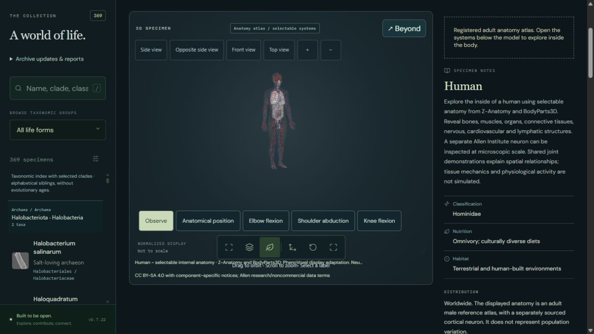
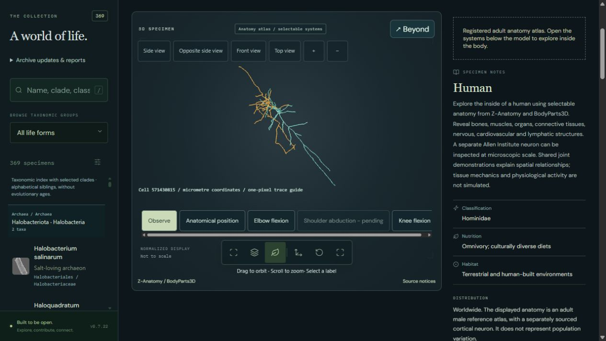
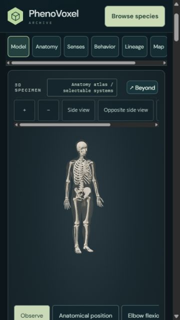

PhenoVoxel / HumanINSIDE LIFE / ANATOMY PILOT / VERSION 0.7.28 / 20 NOVEMBER 2026
Explore a body from the outside to one cortical cell.
A human was chosen for this first anatomy pilot because broad, named whole-body surfaces, anatomical terminology, joint references and measured cell reconstructions are openly accessible. The application now connects these sources through a selectable atlas in its regular specimen viewer.
Open the human anatomy pilot →3,875named body atlas components
13on-demand systems and cell layers
7,641nodes in one deposited neuron tracing
What to try
- Choose Human in Browse species, then open Anatomy. Start with X-ray overview or Skeleton.
- Reveal muscles, organs, connective tissue, nerves, vessels or lymphatics. Change exterior opacity to see their spatial relationships.
- Search for a structure, or tap its visible surface. Focus, isolate, hide and restore individual source components. Search for heart to find its chambers and valves; results have pagination.
- Choose elbow or knee motion. Pause, scrub the eight-second demonstration, inspect a phase and reset. Every body layer uses the same joints and skinning.
- Open One neuron for microscopic inspection. Its source coordinates are in micrometres. A one-pixel centreline guide makes fine branches legible; deposited SWC tube radii remain available in the surface rendering.

Actual app view: cardiovascular and lymphatic source geometry, with a faint body shell. Red, blue and green are instructional colors.
Actual app view: independently sourced cortical cell 571430815. Orange and teal distinguish source SWC compartments; a screen-width trace guide aids inspection.
375 × 667 browser layout check. This is viewport testing; a physical iPhone performance or thermal check has not been completed.Coverage and scientific limits
The 12 body layers contain source surfaces for body regions, bones and teeth, muscles, muscle attachments, ligaments and fascia, visceral organs, arteries, veins, lymphatic and lymphoid structures, brain and spinal regions, peripheral nerves and sense organs. Counts are atlas components. A single bone or organ may have multiple components, so these counts are not biological totals.
The body is an adult male reference atlas, derived from BodyParts3D and extended by Z-Anatomy. It does not represent every age, sex, anatomical variant, capillary, cell, connective-tissue fibre or microscopic structure. Surface colors are illustrative. Source surfaces have been simplified for browser display, so the output is unsuitable for anatomical measurement without returning to the original data.
The two available joint studies are authored spatial demonstrations using Z-Biomechanics pivot positions. Bones remain rigid, while source soft-tissue surfaces use shared skin weights. Muscle force, tissue sliding, tendon strain, joint contact, patellar tracking, balance, organ deformation, breathing and haemodynamics are not calculated. The eight-second clock is a display clock.
The neuron comes from a separate Allen Institute human specimen: middle temporal gyrus, cortical layer 3, specimen 571430815. Its anchor inside the atlas head is illustrative and is not a measured registration. Tracing and preparation errors are not estimated here. Deposited SWC radii are source reconstruction values. No full-body connectome, neural firing, sensory experience or physiological validation is claimed.
The cutaway is an uncapped display clipping plane. It does not generate histological sections. Camera-based X-ray or medical imaging is outside this pilot.
Observed failure retained as pending
The prototype combined 12 degrees of shoulder-girdle rotation with 43 degrees at the upper arm. Visual review found excessive fascial stretching and web-like surfaces around the shoulder. This motion is withheld and its control remains labeled pending. The resting atlas is unchanged. A better shoulder study needs explicit scapular motion and tissue sliding rather than the current shared-weight approximation.
Verification
The eight anatomy integrity and motion checks passed locally. They verify source file hashes and sizes; unique source-component ownership of every triangle; matching joint coordinates and normalized skin weights across body systems; hide/isolate/restore without vertex modification; rigid right-radius geometry during elbow motion and exact reset; CNS versus peripheral-nerve grouping; the cell tracing's node count and spatial scale; and delayed loading onto the same moving skeleton. Existing bald-eagle regression checks also passed in the isolated release checkout.
Visual checks sampled standing anatomy, flexed elbow, systems views and microscopic focus. The phone layout was checked at 375 × 667 with navigation, search and page-overflow inspection. These are software checks. They do not establish biological accuracy of tissue deformation or constitute expert anatomical review.
Data and reproducibility
Z-Anatomy pinned source supplies the atlas, TA2 terminology and biomechanics reference. BodyParts3D describes its adult-male reference and anatomical concepts. Allen Cell Types Database supplies the independent cortical cell; its original SWC file is retained unchanged in the versioned data release.
Display assets are served from the immutable anatomy data commit. Every loaded file is checked against its expected byte count and SHA-256. The initial four body layers total about 8.9 MB, with a 1.3 MB catalog; other systems load when opened. Geometry is batched by system, with per-structure identifiers and one shared body skeleton.
Rebuild the display assets
Use the repository lockfile with npm ci. Run python anatomy-fetch-v0728.py for checksum-verified source inputs and python anatomy-blender-v0728.py for the pinned official portable Blender. Run Blender in background mode with --factory-startup --disable-autoexec.
- Open the atlas Startup.blend with
--python anatomy-extract-v0728.py. - Open the biomechanics Startup.blend with
--python anatomy-inspect-v0728.py -- research-cache/anatomy-v0728/biomechanics-inspection.json, then run python anatomy-rig-build-v0728.py. - Run
node anatomy-pack-v0728.mjs and node anatomy-neuron-v0728.mjs. Run python anatomy-terms-v0728.py to attach 2,889 exact, unambiguous source Latin matches and refresh the catalog hash. The source group search index records original organ collection memberships. - Run
node --test anatomy-v0728.test.mjs. The runtime and test delivery manifests identify the exact released artifacts; authoring a new derivative requires repinning its catalog and source descriptors.
Source archives and licenses are preserved. No source-embedded Blender add-ons or auto-execution are enabled.
Source manifest / Delivery hashes / Complete attribution and reuse notices / Reproducible code and tests
Atlas derivative: CC BY-SA 4.0 with BodyParts3D CC BY-SA 2.1 Japan and component-specific notices. Kidney and inner-ear source references include noncommercial terms. Allen data follows its research/noncommercial Terms of Use. The datasets are kept separately identified.
PHENOVOXEL ARCHIVE / PROJECT SUPERVISOR: PHENOVOXEL PROJECT SUPERVISOR / REFERENCE ANATOMY WITH EXPLICIT EVIDENCE LIMITS